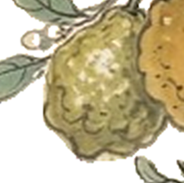

1
The candidate
Why citrus bergamot?
A
The plant
Citrus bergamia grows almost only in Calabria, Italy, and its juice is unusually rich in flavanones.
B
The molecules
Two of those flavanones — brutieridin and melitidin — carry a statin-like side chain.
C
The target
They are proposed to inhibit HMG-CoA reductase, the same enzyme that statins block.
Proposed, not proven
A detail of the branch at the centre of this poster — the fruit whose juice carries the flavanones.
Did you know?
Statins came from nature too: compactin was isolated from Penicillium citrinum (Endo, 1976), and lovastatin, from Aspergillus terreus, became the first FDA-approved statin in 1987.